메뉴 이름, 버튼, 날짜, GPS 등으로 찾아보세요.
버튼은 PSP 표기인 ○·×·△·□로 안내합니다. PPSSPP의 키보드와 Vita의 버튼 배치는 실행 환경 설정을 따릅니다.
이미지를 누르면 크게 볼 수 있습니다.
찾는 항목이 없습니다. 다른 검색어를 입력하거나 ‘지우기’를 눌러 전체 설명서를 보세요.
첫 별빛을 만나기까지
타이틀에서 START를 누르면 여섯 가지 메뉴가 열립니다. 방향키로 고르고 ○로 들어가세요.
- 타이틀에서 START
START를 눌러 메인 메뉴를 엽니다. - 밤하늘 재현 선택
방향키로 「밤하늘 재현」을 고른 뒤 ○를 누릅니다. 현재 날짜·관측지의 하늘이 펼쳐집니다. - □로 나만의 관측 시작
□를 누르면 설정·검색 메뉴가 열립니다. 날짜와 장소를 바꾸거나 보고 싶은 천체를 찾아보세요.

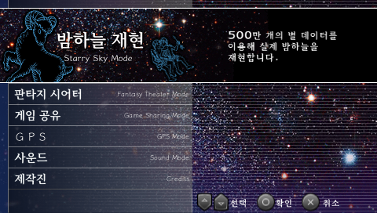

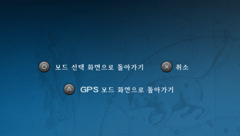
메인 메뉴 여섯 가지
- 밤하늘 재현
- 날짜·시간·관측지를 정해 하늘을 둘러봅니다.
- 판타지 시어터
- 20편의 작품을 한글 자막으로 감상합니다.
- 게임 공유
- 다른 PSP로 밤하늘 수신 프로그램을 보냅니다.
- GPS
- 별도 PSP용 GPS 수신기로 위치를 받는 기본판 기능입니다.
- 사운드
- 10곡을 고르고 재생합니다.
- 제작진
- 제작진 목록을 봅니다.
메뉴 기본 조작
- 방향키
- 메뉴 선택
- ○
- 확인·메뉴 진입
- ×
- 이전 화면·취소
메인 메뉴로 돌아오기
밤하늘에서 ×를 누른 뒤 확인창의 ○를 누릅니다. 화면에는 「모드 선택 화면으로 돌아가기」로 표시됩니다. 확인창의 ×는 취소, △는 「GPS 모드 화면으로 돌아가기」입니다. HOME으로 앱을 종료하는 동작과는 다릅니다.
언제, 어디에서 볼까요?
오늘 밤의 서울부터 오래전 다른 도시의 하늘까지. □로 설정 메뉴를 열고 L/R로 탭을 바꾸세요.
- 방향키
- 보는 방향 바꾸기
- L / R
- 확대 / 축소
- △
- 표시 전환
- □
- 설정·검색 메뉴 열기
- L / R · 메뉴 안
- 탭 전환
- × / □ · 메뉴 안
- 취소·닫기
날짜·시간 변경
←/→로 년·월·일·시·분의 자릿수를 옮기고 ↑/↓로 값을 바꿉니다. ○로 적용하고 × 또는 □로 취소합니다. △의 「본체 시간 적용」을 누르면 본체의 현재 시간을 불러옵니다.

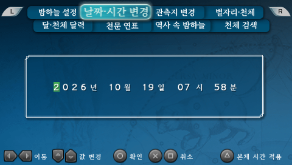
관측지 변경
지역을 고르고 ○, 이어서 도시를 고르고 ○를 누릅니다. 서울은 「아시아」의 「한국:서울」에서 선택할 수 있습니다. 「입력」에서는 위도·경도·시차를 직접 지정합니다. × 또는 □로 이전 단계로 돌아가거나 취소합니다.

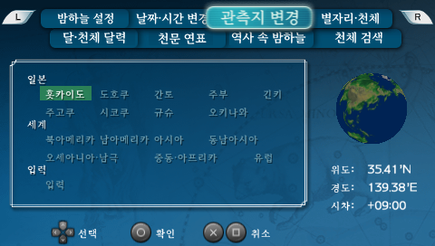

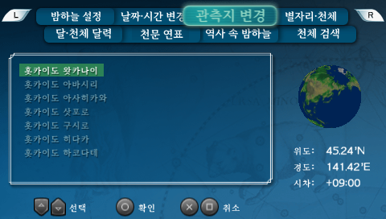
별자리·천체 표시
「별자리 이름」「별자리 선」「별자리 그림」「천체 이름」을 각각 표시하거나 숨길 수 있습니다. 방향키로 항목과 값을 고르고 ○로 확인하세요.

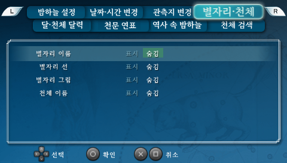
밤하늘 설정
낮의 밝기와 자연 현상, 재생 속도, 등급 필터 등을 바꿀 수 있습니다. 「초기화」를 고르면 초기 상태로 되돌립니다.

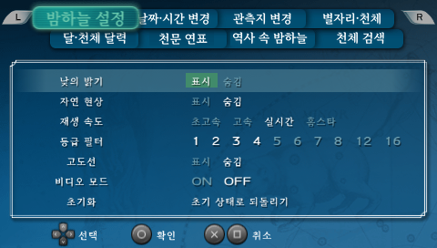
- 낮의 밝기
- 표시 / 숨김
- 자연 현상
- 표시 / 숨김
- 재생 속도
- 초고속 / 고속 / 실시간 / 홈스타
- 등급 필터
- 1 / 2 / 3 / 4 / 5 / 6 / 7 / 8 / 12 / 16
- 고도선
- 표시 / 숨김
- 비디오 모드
- ON / OFF
- 초기화
- 초기 상태로 되돌리기
천문 연표·역사 속 밤하늘
방향키로 항목을 고르고 ○를 누르면 그 항목의 날짜·관측지로 하늘이 이동합니다. × 또는 □로 취소합니다.

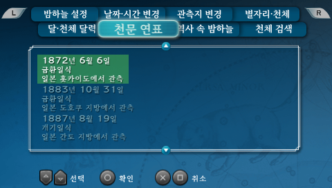

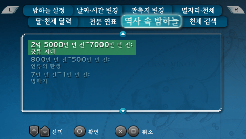
설정 탭 전체 순서
- 밤하늘 설정
- 날짜·시간 변경
- 관측지 변경
- 별자리·천체
- 달·천체 달력
- 천문 연표
- 역사 속 밤하늘
- 천체 검색
이 별의 이름이 궁금할 때
천체 검색에서 대상을 찾은 뒤 △를 눌러 사전을 여세요. 이름과 그림, 설명을 함께 읽을 수 있습니다.
거문고자리 찾아보기
「천체 검색」에서 「별자리」 → 「ㄱ」 → 「거문고자리」를 고른 뒤 △를 누릅니다.

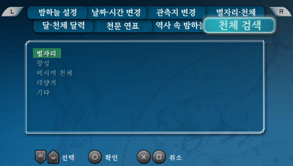


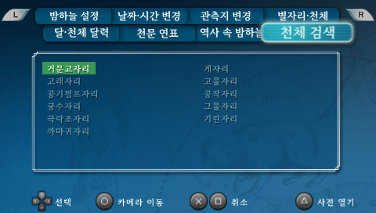

검색 목록과 사전의 조작
- ○ · 검색 목록
- 선택한 천체로 카메라 이동
- △ · 검색 목록
- 사전 열기
- ↑ / ↓ · 사전
- 본문 스크롤
- × · 사전
- 이전 화면으로 돌아가기
스무 편의 밤하늘 이야기
메인 메뉴의 「판타지 시어터」에서 작품을 골라 ○를 누르세요. 계절별 별자리부터 성운과 우리은하까지 한글 자막으로 만납니다.

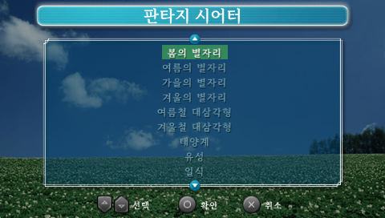

작품 선택과 재생 중 조작
- ↑ / ↓ · 작품 목록
- 작품 선택
- ○ · 작품 목록
- 재생
- L / R · 재생 중
- 이전 장면 / 다음 장면
- △ · 재생 중
- 자막 켜기·끄기
- □ · 재생 중
- 조작 설명 보기
- × · 재생 중
- 시나리오 목록 복귀 확인
- × · 작품 목록
- 메인 메뉴로 돌아가기
재생 중 방향키와 ○는 사용하지 않습니다. 음성은 일본어 원음이며 한국어 더빙은 제공하지 않습니다.
판타지 시어터 20작품 전체 목록
- 봄의 별자리
- 여름의 별자리
- 가을의 별자리
- 겨울의 별자리
- 여름철 대삼각형
- 겨울철 대삼각형
- 태양계
- 유성
- 일식
- 남반구의 밤하늘
- 이시가키섬의 특별한 밤
- 성단
- 성운
- 우리은하
- 칠석
- 황도 12별자리
- 오리온자리
- 별빛이 도착하기까지
- 별의 밝기
- 홈스타의 밤하늘
게임 안의 조작 안내 화면

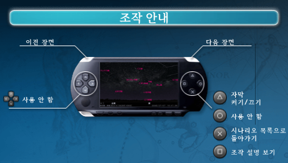
음악을 듣고, 밤하늘을 나누고
사운드에서는 음악을 골라 듣고, 게임 공유에서는 다른 PSP로 간소화된 밤하늘 프로그램을 보낼 수 있습니다.
사운드 10곡
메인 메뉴에서 「사운드」를 엽니다. ↑/↓로 곡을 고르고 ○를 누르면 재생 화면으로 들어갑니다. ←/→로 재생·일시정지·정지 아이콘을 고른 뒤 ○로 실행하세요. 음량은 기기의 음량 버튼으로 조절합니다.
재생 화면에서 ×를 누르면 곡 목록으로, 목록에서 ×를 누르면 메인 메뉴로 돌아갑니다.

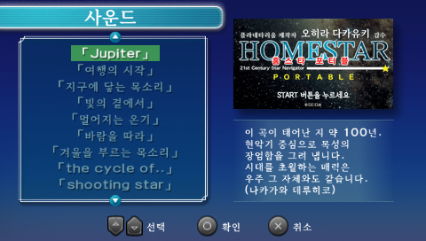

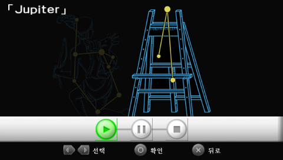
사운드 10곡 전체 목록
- Jupiter
- 여행의 시작
- 지구에 닿는 목소리
- 빛의 곁에서
- 멀어지는 온기
- 바람을 따라
- 겨울을 부르는 목소리
- the cycle of..
- shooting star
- 우주의 나그네
다른 PSP에 보내는 게임 공유
메인 메뉴의 「게임 공유」에서 연결 안내를 따라 수신 프로그램을 전송합니다. 받는 PSP에서는 타이틀의 START를 눌러 밤하늘로 들어갑니다. 받는 쪽에 ISO나 폰트를 따로 설치할 필요는 없습니다.

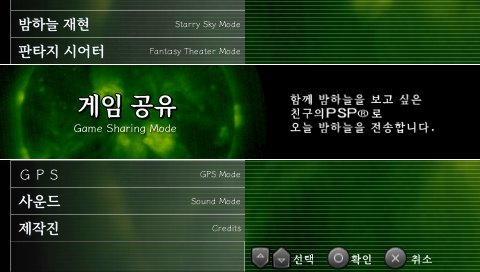

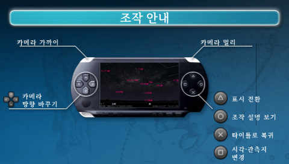
공유를 받은 PSP의 조작
- 방향키
- 카메라 방향 바꾸기
- L / R
- 카메라 가까이 / 멀리
- △
- 표시 전환
- ○
- 조작 설명 보기
- □
- 시각·관측지 변경
- ×
- 타이틀로 복귀
PSP 실기 2대로 게임 공유를 확인했습니다. Vita가 받는 공유와 Vita끼리의 공유는 확인하지 않았습니다.
막혔을 때 먼저 확인하세요
기본판과 Vita 호환판 중 무엇을 고르면 되나요?
PSP·PPSSPP에서는 기본판, PS Vita·Adrenaline에서는 Vita 호환판을 사용하세요. 번역·폰트·시어터·공유 수신 프로그램은 같습니다. Vita 호환판은 PSP용 외장 GPS 연동을 제외했으며, 날짜·시각·관측지 직접 지정은 두 판 모두 가능합니다. 원작의 공식 Vita 지원을 뜻하지는 않습니다.
패치는 어떤 원본에 적용하나요?
HOMESTAR PORTABLE 일본·아시아판 ULJM05184 / 1.00의 압축하지 않은 ISO가 필요합니다. 지원 원본 크기는 614,465,536바이트이며 전체 SHA256이 일치해야 합니다. 두 판은 같은 원본에 각각 독립 적용하세요. 기본판 위에 Vita판을 덧씌우지 않습니다. 원본 ISO는 배포하지 않습니다.
SHA256
33e334b2e8789c12c782ef28e7cec99c93e469e029cb14bb5a9fd5ad7970c0c1
한글 폰트를 따로 설치해야 하나요?
아니요. 폰트가 ISO와 공유 수신 프로그램 안에 들어 있습니다. 별도 PGF 파일을 복사하지 않아도 됩니다.
저장은 어디에서 하나요?
본편의 메인 메뉴와 설정에는 진행도를 저장·불러오는 세이브 슬롯이 없습니다. 날짜·시간·관측지는 필요할 때 지정해 사용하세요. 재기동 후 설정 유지 범위는 보증하지 않으므로 다시 보고 싶은 날짜와 장소는 기록해 두는 것이 좋습니다. 에뮬레이터의 상태 저장은 게임 자체의 저장과 별개입니다.
천체를 골랐는데 사전이 열리지 않아요.
검색 목록에서 ○는 해당 천체로 카메라를 이동합니다. 사전은 △의 「사전 열기」로 여세요. 본문은 ↑/↓로 스크롤하고 ×로 돌아갑니다.
달·천체 달력에 아무것도 없어요.
원작 달력은 2006년 7월~2011년 12월 자료만 포함합니다. 본체의 현재 연월로 조회하므로 2026년에는 빈 목록이 표시됩니다. 이 패치는 미래 천문 사건을 새로 계산하거나 추가하지 않습니다.
GPS 없이도 원하는 지역의 하늘을 볼 수 있나요?
네. 「관측지 변경」에서 도시를 고르거나 위도·경도·시차를 직접 입력할 수 있습니다. GPS는 인터넷 위치 검색이 아니라 별도 PSP용 수신기를 쓰는 부가 기능입니다. 기본판의 실제 수신기 동작은 검증하지 않았고, Vita 호환판은 외장 GPS 연동을 제외했습니다.
음성도 한국어인가요?
음성은 일본어 원음입니다. 한국어 메뉴·사전·시어터 자막을 제공하며 제작진 이름에 함께 적은 원문, 일부 한문 인용과 영문 표기는 의도적으로 남아 있습니다.
모든 기기에서 확인된 패치인가요?
기본판은 PPSSPP와 PSP에서 메뉴·사전·검색·설정·시어터와 공유를, Vita 호환판은 Vita·Adrenaline에서 기동·밤하늘·시어터 전편·사운드 장시간 동작·종료 복귀와 공유를 확인했습니다. 모든 모델·환경 조합, 실제 GPS 수신기, 기존 일본판 세이브 호환, Vita가 받는 공유는 확인하지 않았습니다.
문제가 생기면 무엇을 알려 드리면 되나요?
사용한 배포판과 실행 환경, 거쳐 온 메뉴, 마지막으로 나온 화면을 적어 주세요. 원본 ISO나 게임 파일은 첨부하지 마세요.